Onde o Cazaquistão está localizado?
O Cazaquistão está localizado na Ásia Central, entre a Europa e a Ásia. É o maior país da Ásia Central e possui uma das maiores extensões territoriais do mundo. O país faz fronteira com a Rússia ao norte e oeste, a China a leste, e com o Quirguistão, o Uzbequistão e o Turcomenistão ao sul. A oeste, também possui litoral no Mar Cáspio.
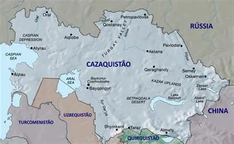
Uma curiosidade é que o território cazaque é tão extenso que apresenta diferentes paisagens, como grandes estepes, áreas desérticas, montanhas e lagos. Sua localização também teve grande importância histórica, pois a região fazia parte das antigas rotas da Rota da Seda, que conectavam diferentes áreas da Ásia e da Europa.
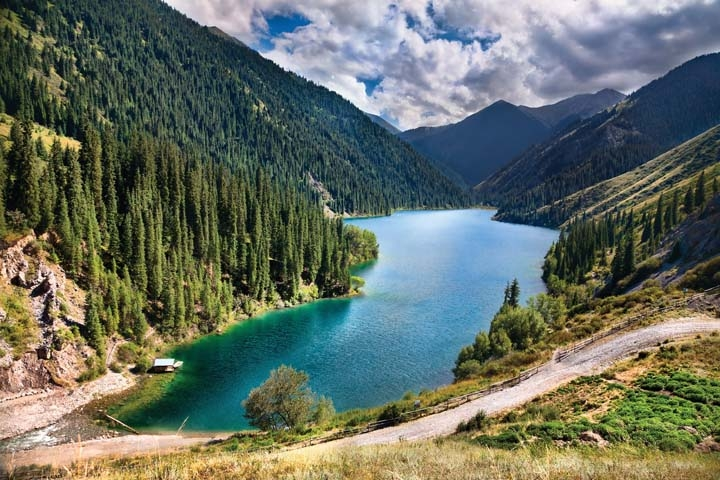
Turismo
O Cazaquistão possui uma grande diversidade de atrações turísticas, desde paisagens naturais
formadas por montanhas, lagos e cânions até monumentos históricos e construções modernas.
Entre os destinos mais conhecidos estão a região de Almaty, o Parque Nacional Charyn e a
cidade histórica de Turkistan. Essa variedade permite conhecer diferentes aspectos do país,
desde suas belezas naturais até sua história e cultura.
Charyn Canyon

Charyn Canyon possui uma das paisagens naturais mais impressionantes do país
O Charyn Canyon é um dos principais atrativos naturais do país. Localizado na região de Almaty, possui enormes formações rochosas avermelhadas esculpidas pela ação da água e do vento ao longo de milhões de anos. Uma de suas áreas mais famosas é o Vale dos Castelos, conhecido pelas formações rochosas que lembram antigas construções.
Lagos Kolsai

Lagos Kolsai, cercados por montanhas e florestas na região de Almaty
Os Lagos Kolsai formam um conjunto de lagos de montanha cercados pelas paisagens do Tian Shan. Suas águas e as florestas de coníferas ao redor fazem da região um dos destinos naturais mais conhecidos do país. O local também é procurado para atividades como caminhadas e passeios pela natureza.
Mausoléu de Khoja Ahmed Yasawi
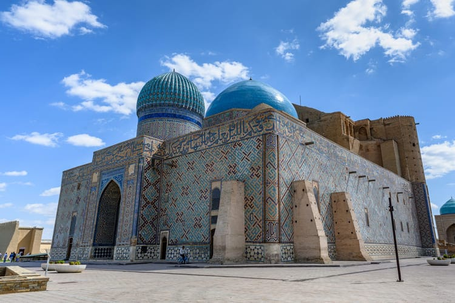
Mausoléu de Khoja Ahmed Yasawi, importante patrimônio histórico e arquitetônico
Localizado na cidade de Turkistan, o mausoléu foi construído entre os séculos XIV e XV por iniciativa de Amir Timur, em homenagem ao poeta e líder religioso Khoja Ahmed Yasawi. O monumento é um dos exemplos mais importantes da arquitetura medieval da Ásia Central e faz parte da lista de Patrimônio Mundial da UNESCO desde 2003.
Torre Baiterek
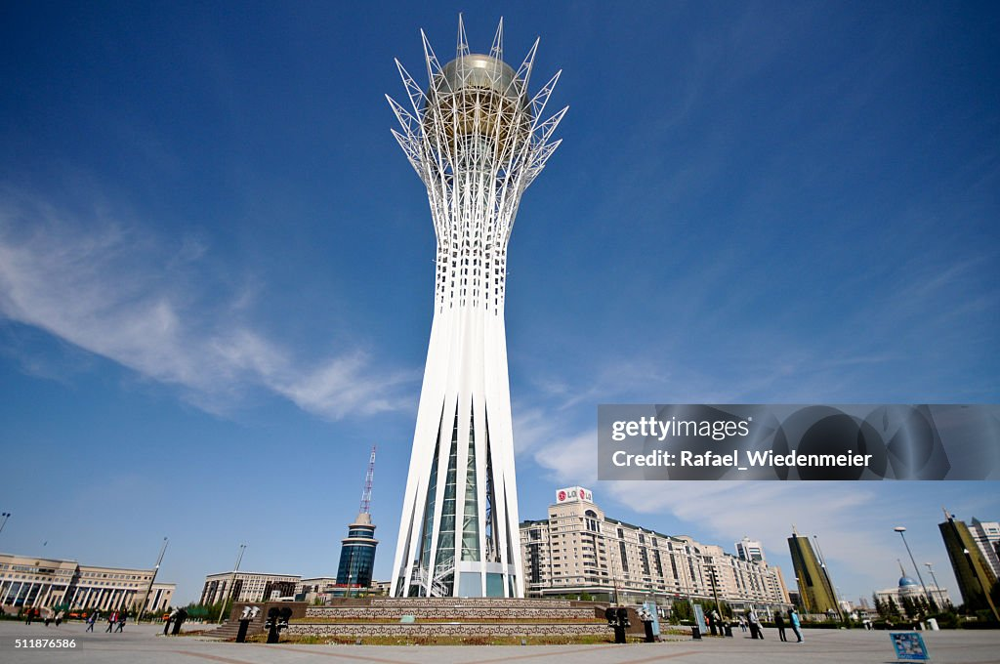
Torre Baiterek, um dos símbolos da moderna capital cazaque
A Torre Baiterek é um dos símbolos de Astana, capital do Cazaquistão. Sua estrutura moderna e a grande esfera dourada no topo fazem dela um dos pontos mais conhecidos da cidade. O monumento representa a modernização e o desenvolvimento da capital.
Gastronomia
A culinária do Cazaquistão tem uma história rica e está muito ligada aos costumes e às tradições do país. Muitos pratos levam carne e massas, refletindo os hábitos do povo cazaque ao longo dos anos. Entre os mais conhecidos estão o Beshbarmak, considerado o prato nacional, o Baursak, um pãozinho frito muito servido em comemorações, e o Kuyrdak, feito com carnes e outros ingredientes. Vamos conhecer um pouco mais sobre esses pratos típicos e os sabores da cultura cazaque!
Beshbarmak
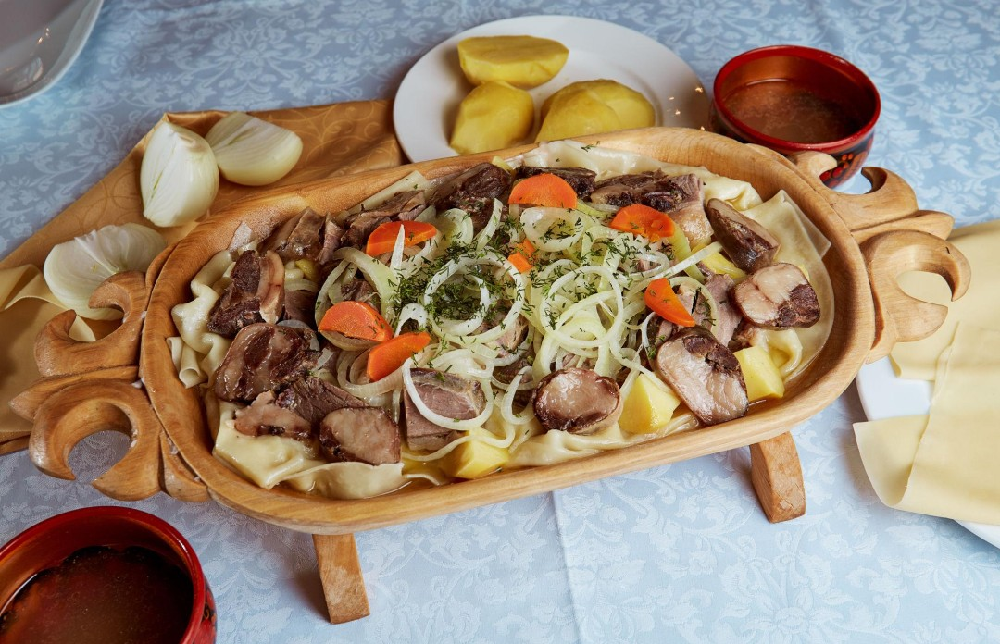
É considerado o principal prato nacional do Cazaquistão. É preparado com carne cozida, geralmente de cordeiro, cavalo ou boi, servida com uma massa larga semelhante a macarrão e molho de cebola com caldo. É muito associado a festas e reuniões familiares.
Baursak
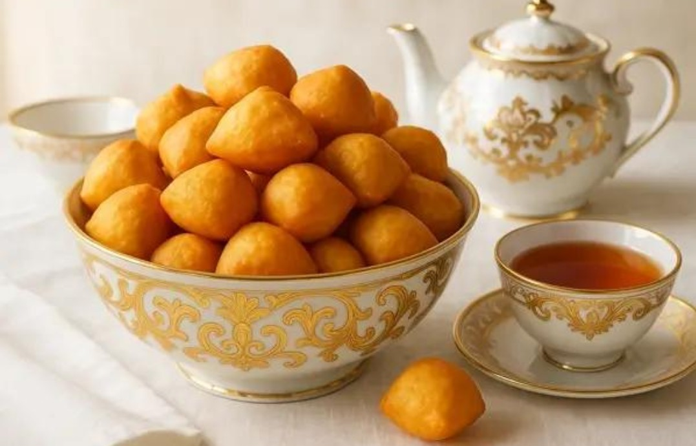
São pequenos pedaços de massa frita, macios por dentro e dourados por fora. Costumam ser servidos com chá e aparecem frequentemente em celebrações e refeições especiais. São um símbolo da hospitalidade cazaque.
Kuyrdak
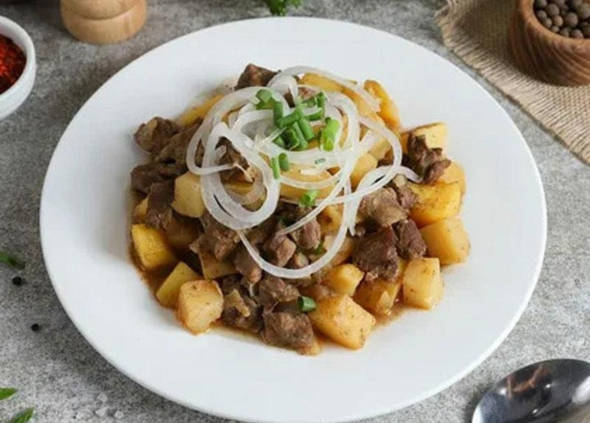
É um prato tradicional feito com carnes e, na receita típica, órgãos como fígado, coração e rins, preparados com cebola e, frequentemente, batatas. Sua origem está ligada aos costumes pastoris dos povos da região.
Cultura
A cultura cazaque nasceu nas estepes da Ásia Central, moldada por séculos de vida nômade. Ela se revelaz na yurta, a casa circular de feltro, nas roupas tradicionais como o chapan e o saukele, na música da dombra, na culinária, nas festas como o Nauryz e na falcoaria com águias, tradições que o país mantém vivas ao lado da vida moderna.
Roupas tradicionais
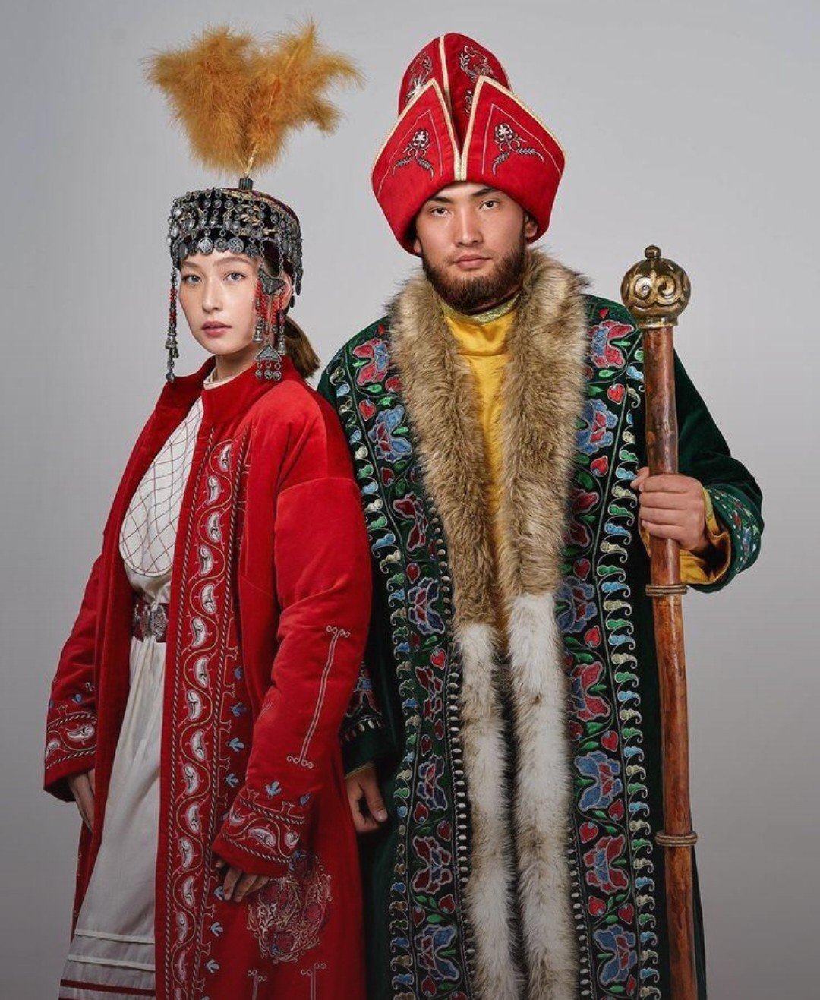
As roupas tradicionais do Cazaquistão são conhecidas pelos bordados, tecidos decorados e acessórios. Uma peça bastante característica é o chapan, um tipo de casaco longo usado em ocasiões especiais. Os trajes podem variar conforme a região e a celebração
Música e dança
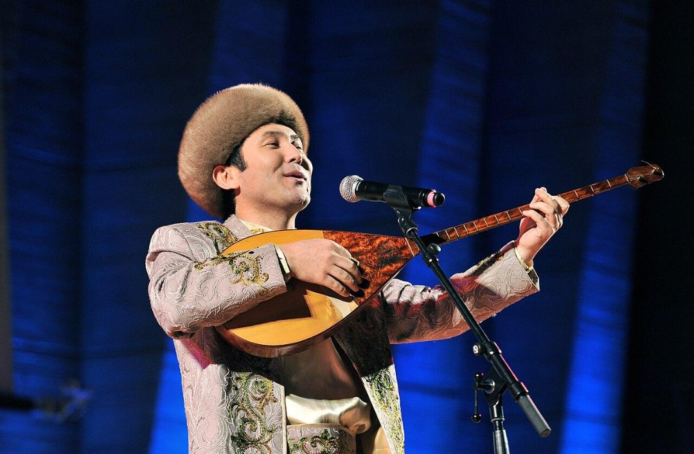
A música tradicional tem grande importância na cultura cazaque. Um dos instrumentos mais conhecidos é a dombra, um instrumento de cordas com duas cordas, usado para acompanhar canções e contar histórias. As apresentações musicais e as danças também fazem parte de festivais e eventos culturais.
Festas e celebrações
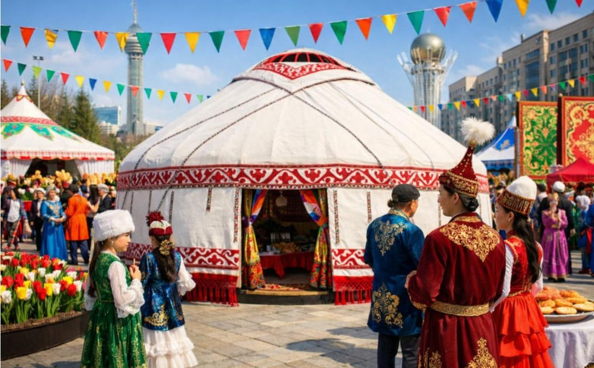
Uma das celebrações mais importantes é o Nauryz, festival que marca a chegada da primavera e representa renovação, união e novos começos. A comemoração costuma incluir comidas tradicionais, música, apresentações culturais e encontros entre familiares e amigos.
Tradições nômades e hospitalidade
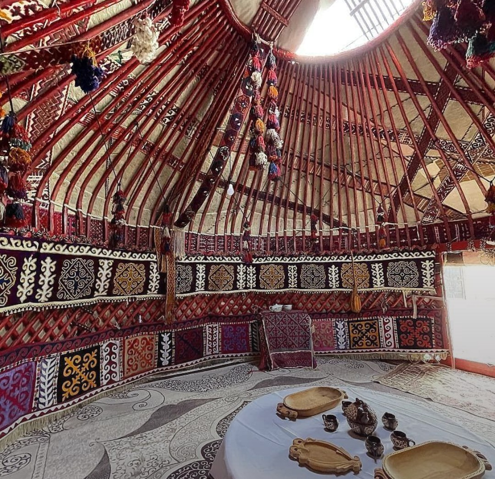
A história do Cazaquistão está muito ligada aos povos nômades, que se deslocavam pelas estepes com seus rebanhos. As yurtas, tendas tradicionais que podem ser montadas e desmontadas, são um símbolo desse modo de vida. A hospitalidade também é um valor importante, e receber visitantes com comida e chá faz parte de muitos costumes.